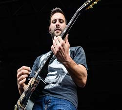

Started as a joke to blow off steam in a basement in Pennsylvania, The Wonder Years began writing music together in 2005. Made up of 6 college buddies, they now have 5 full length studio albums, countless EPs and special appearances, and have been making head way in the pop punk genre for over 10 years.
Members
Dan "Soupy" Campbell - Lead Vocals
Matt Brasch - Lead Guitar, Backup Vocals

Casey Cavaliere - Rhythm Guitar, Vocals
Mike Kennedy - Drums, Percussion
Josh Martin - Bass Guitar, Vocals
Nick Steinborn - Guitar, Keyboards, Piano, Vocals
Discography
Get Stoked On It! - Ocbtober 30, 2007
Keystone State Dude-Core
Bout to get Fruit Punched, Homie
Buzz Aldrin: The Poster Boy for Second Place
Let's Moshercise!!!
What if we (swam) into Nothing?
Racing Trains
Zombies are the New Black
We Were Giants
My Geraldine Lies Over The Delaware
Dude, What's a Land Pirate
I Fell in Love with a Ninja Warrior
When Keeping it Real Goes Wrong
The Upsides - January 26, 2010
My Last Semester
Logan Circle
Everything I Own Fits In This Backpack
Dynamite Shovel
New Years with Carl Weathers
It's Never Sunny in South Philadelphia
Hostels & Brothels
Melrose Diner
This Party Sucks
Hey Thanks
Washington Square Park
All My Friends Are In Bar Bands
Suburbia I've Given You All And Now I'm Nothing - June 14, 2011